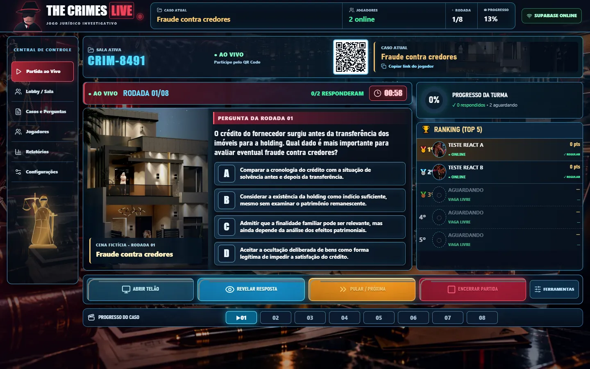

DIREÇÃO DE ARTE · V5.1
THE CRIMES CINEMATIC
Explore as sete telas reais do jogo e as oito cenas da investigação. As capturas são testes do frontend React funcional, e não modelos estáticos criados para simular botões.
CAPTURAS REAIS · TESTES APROVADOS
Central do Host — V5.11440 × 900 • Partida em andamento

Central do professor: sala, QR Code, pergunta, ranking, controles reais e oito rodadas.
Oito cenas de uma investigação
Arte composta a partir da fotografia arquitetônica licenciada e das cenas originais do caso fictício Fraude contra Credores. Abra uma imagem para examiná-la em detalhe.
Peças visuais da interface React
Quatro fundos WebP reais, importados por Host, telão, entrada e encerramento. Os botões, perguntas e pontuação são componentes React renderizados sobre essas imagens.